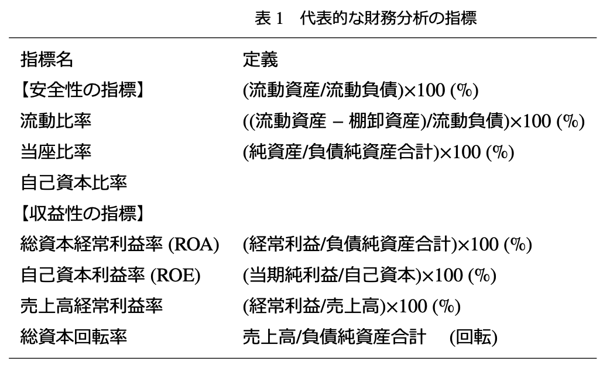

序章 会計情報を統計分析する:必要性と困難性
この教科書は，会計情報を統計分析し，企業内部のマネジャーが経営上の様々な意思決定に役立てていくための諸技法を解説している。そのため，事前の知識としては，簿記3級以上の仕訳の知識，ビジネス会計検定3級以上の財務諸表の知識を前提としている。また，統計学についても統計検定3級以上の知識があると望ましいが，本書の最低限の解説で，分析自体は実行可能だろう。
0.1 「会計情報を統計分析する」とは?
ビジネスに役立つ会計情報分析といえば，これまでROA(ReturnonAssets:総資産利益率)やROE(ReturnonEquity:自己資本利益率)のような，いわゆる比率の計算を主とする，いわゆる財務諸表分析と呼ばれる手法が中心であった。これら比率の計算は，あたかも人体の問題を血圧や血中の各種バイタル指標が早期に警告してくれるかのように，企業の問題点を警告してくれる重要なものである。この計算の意義は，近年でも依然として重要である。次の表1は，一般的な指標の例である。これは，ビジネス会計検定3級で触れられている指標を抜粋したものである。

これらの指標は，経営におけるリスクとリターンという，最も根源的な2つの要因について，重要な示唆を与えてくれる。そのため，経営分析指標は長い期間に渡って企業経営に用いられてきた1。しかし，近年の統計分析理論や分析用機器の性能の発達は，単なる比率分析を超えた分析の可能性を示唆するほどのものであった。具体的には，会計研究においては，「コスト変動研究」と「利益調整研究」という2つの実証的な研究領域が，企業内部のマネジャーにとって役立つだろう。
0.2 実証的な会計研究からの示唆:「コスト変動研究」と「利益調整研究」
この教科書では，Rを利用した分析を紹介するが，特に重視するのが「回帰分析」と呼ばれる分析技法である。例えば，CVP分析でよくみる次のようなモデルを考えてみよう。
\[ コスト = \beta_0 + \beta_1 \times 売上高 + \varepsilon. \tag{1} \]
もし，コストと売上高の一定期間のデータが有れば，\(\beta_0\)(固定費部分)と\(\beta_1\)(変動費率部分)を回帰分析で推定できる。また，売上高で説明しきれないコストについては，残差と呼ばれる\(\varepsilon\)(イプシロン)部分で表現されている。この回帰分析を利用して，コスト変動研究と利益調整研究は展開されている。
まず，コスト変動研究は，先程の(1)式を様々に展開して，コスト変動のより深い理解を探る研究が進展した。例えば，活動基準原価計算(Activity-basedcosting;ABC)は，生産数量以外のコスト・ドライバーを想定した原価計算である。その場合，コストを製造間接費とし，生産数量の代理変数たる売上高の影響\(\beta_1\)以外にも，他のコスト・ドライバー(\(\beta_2 \times ロットサイズとか \beta_3 \times 製造現場の面積など\))を含んで，回帰分析を実行することで，単一のコスト・ドライバーを想定する既存の原価計算における配賦の歪みの問題点を明らかにした研究がある2。 また，販売費及び一般管理費(以下，販管費と略す)を対象として，売上高の増加時と減少時で非対称的な変動がみられることを観察した研究も進展した。具体的には，売上高が上昇した際の販管費の上昇分に対して，売上高が減少した際の販管費はそれほど減少しないという，「コストの下方硬直性」という現象の発見である3。これは，販売費及び一般管理費が，単なる当期のコストという性質にとどまらず，ある程度は無形資産への支出のような意味合いを持つ可能性を示唆したともいえる。
ざっくりといえば，コスト変動研究がβ1などのコスト変動の係数に着目した研究群であったのに対して，利益調整研究は説明されないεに着目した研究群である。例えば，キャッシュは，当期純利益とかなり相関していると考えられるが，利益によって予測されるキャッシュと実際のキャッシュの乖離が大きい場合，なんらかの会計的な利益の操作が行われたのではないかと推測するのである4。実際，赤字を回避したり，目標利益を達成したりする際に，キャッシュで説明できない利益が増加するという。具体的には，減価償却費の償却方法を変更したり，貸倒引当金の見積り金額を変更したりするなどの方法が取られるようだ。
また，過剰在庫を積み上げたり，広告宣伝費を過度に減少させたりといった「実体的な」利益調整も存在するという*5。これも同様に説明されない残差に着目した研究群だが，現在までには，「押し込み営業」，「過剰在庫」，「自由裁量費の削減」などが統計的にある程度は識別可能な状況のようだ。 このような研究は，資本市場のアナリストだけではなく，企業内部のマネジャーにとっても重要な示唆を持つ。というのも，コスト変動研究の成果は，予算作成のための見積財務諸表作成に直接的に貢献するし，利益調整研究の成果は，部門業績評価の際に直接的に貢献すると想定されるからである。
0.3 企業内部で会計情報の統計分析を実施「できない」理由
このような20世紀最後の10年間における会計情報の統計的分析技法の飛躍的な向上にもかかわらず，多くの企業ではこのような分析が普及することはなかった。それはなぜだろうか。
この点については，21世紀以降の経営分析・管理会計論の代表的な研究者であるクリストファー・イットナーとデイビッド・ラーカーが，『戦略をコントロールする』という書籍の中に掲載した論文「戦略的測定から戦略的データ分析へ」の中で議論している。彼らは，経営分析を計画策定やマネジメントのような業績測定システムに反映させることについての重要な論点を提供した。多くのアメリカの企業が経営分析を業績測定システムの一環として実施していないことを次のように表現している。
…これらのメカニズムをうまく用いることが業績測定システムの成功と関連しており，財務業績を改善するということが次々と明らかにされているにもかかわらず…(中略)…，いくつかのサーベイ調査では，戦略的業績測定システムを利用する多くの企業がこうした分析を行わないことが示唆されており，これらの利用と効果を促進する要因あるいは阻害する要因に関して重要な問題が提起されている。(邦訳p. 118)
ここで引用した箇所は，現在の経営分析の企業での利用状況を簡潔に現しており示唆的である。というのも，戦略的業績測定システムを利用している企業が多い，ということはすでに分析対象となるデータは企業内にもうすでに蓄積されていることを意味しているからである。多くの企業では，新しくコストをかけることなく「今そこにあるデータ」を分析することで，より効率的な計画設定やマネジメントを実施できることになる。 そして，イットナーらの大規模なサーベイ調査(郵送アンケート調査のこと)，および60社以上の大規模フィールドスタディの結果，特に次の3点を通じて，競争優位に良い影響を及ぼすと指摘した。彼らが指摘した経営分析の機能の一つ目は，「戦略的前提の伝達の促進」である。これは，分析結果そのものが部門間・階層間の対話を促進するということです。二つ目は，「戦略的バリュードライバーの特定」である。自社の価値を増加させる要因をバリュードライバーとして特定でき，結果として3つ目の影響である「資源の有効利用」に結びつく。つまり，企業の限られた資源をそのドライバーに集中できるということである。もっとも，この3つの影響はいずれも戦略構築というよりは計画段階に偏ったものであることに注意が必要だろう。戦略的前提の伝達の促進とは，すでに戦略的前提がなければ実施されないし，バリュードライバーや資源の利用方法には無数の選択肢があるわけですが，それを絞り込み方向性を示すものはやはり前提としての戦略だからである。 では，なぜ，多くの企業が会計情報の統計的分析を行わないのだろうか。イットナーらは「なぜ多くの企業にとって戦略的業績指標と経済的な成果との結びつきを明らかにすることがきわめて困難になるのか」(邦訳p.129)と問いかけています。論文後半で提示されるこの問いに対する答えは，(1)指標の不適切さ，(2)情報システムの問題，(3)データの不整合，(4)組織的な情報共有の欠如，(5)調整されていない分析，(6)結果の懸念，(7)組織の信念，と多岐にわたる。 (1)指標の不適切さ，(2)情報システムの問題，(3)データの不整合の3つはいずれも技術的な問題です。そもそもの会計情報の選択が不適切だったり((1)指標の不適切さ)，組織内部に蓄積された適切な情報の存在そのものを分析者が認識できなかったり((2)情報システムの問題)，部門間で指標が異なっても同名称で呼ばれたりその逆の問題もある ((3)データの不整合性)。
(4)組織的な情報共有の欠如，(5)調整されていない分析，(6)結果の懸念，(7)組織の信念の4つは組織的な障害です。部門間の壁が厚く情報には縄張りがあると，効果的な分析は困難となることは容易に想像が出来るだろう((4)組織的な情報共有の欠如)。また，経理部門が行った財務分析，人事部門が行った業績評価分析，品質管理・保証部門が行った品質分析などは，統合されてこそ威力を発揮するにもかかわらず，日々それぞれの部門に与えられた仕事をこなすのに精一杯で統合した分析を行おうという動機をほとんど持ちえないという問題もある((5)調整されていない分析)。そして，分析結果が既存の取り組みの不毛さを指摘することがありえるが，これは担当者にとっては暴かれたくなかった事実かもしれない。このようなことが予想されるとしたら，事前に担当者は分析を妨害してくるかもしれない((6)結果の懸念)。あるいは，過去からの環境変化のためにその信念が陳腐化しているにもかかわらず，過去の経営者の直観と経験を強く信奉したいあまり，分析を拒否するということもある((7)組織の信念)。
このような問題を解決するためには，まずもって会計情報の統計的分析が有効であることを理解する必要がある。本書を読んで，会計情報の統計的分析の有用性を理解したら，このような組織的問題を克服し，自社に以下の章で紹介する諸分析を導入してもらいたい。
本書の構成は一般的なデータサイエンスのプロセスにのっとっており，次のとおりである。まず，第1章ではデータの取得について解説する。自社内の情報を利用する場合もあれば，公開財務データを利用する場合もあるだろう。企業内部のデータならばERP(EnterpriseResourcePlanning)などを利用して獲得できるが，外部データを効率的に獲得する方法は学習する必要があるだろう。第1章は，「バフェットコード」と呼ばれるサービスの紹介と実際のデータ獲得の方法に焦点を当てる。第2章から第3章まではデータを分析可能にするための前処理について学習する。第4章では分析に必要なデータの視覚化について学習し，第5章から第7章までは実際に会計データを分析するプロセスを学習する。
参考文献
Anderson, S. W. and K. L. Sedatole (2012) “Evidence on the cost hierarchy: The associa- tion between resource consumption and production activities,” Journal of Management Accounting Research, Vol. 25, No. 1, pp. 119–141.
Banker, R. D., G. Potter, and R. G. Schroeder (1995) “An empirical analysis of manufacturing overhead cost drivers,” Journal of Accounting and Economics, Vol. 19, No. 1, pp. 115–137. Jones, J. J. (1991) “Earnings management during import relief investigations,” Journal of Accounting Research, Vol. 29, No. 2, pp. 193–228.
Roychowdhury, S. (2006) “Earnings management through real activities manipulation,” Jour- nal of Accounting and Economics, Vol. 42, No. 3, pp. 335–370.
(新井康平)